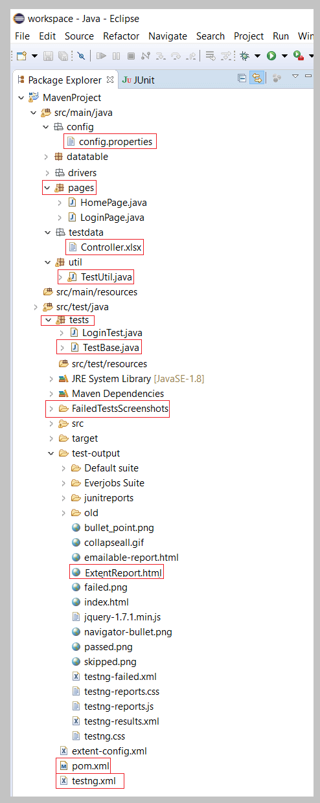

Study Materials
Test Automation Framework Interview Questions: study 1. What is a Framework? A framework defines a set of rules or best practices which we can follow in a systematic way to achieve the desired results. 2. Tell me some popular Test Automation Frameworks? There are different types of test automation frameworks and the most common ones are: Modular Testing Framework Data Driven Testing Framework Keyword Driven Testing Framework Hybrid Testing Framework Behavior Driven Development Framework 3. Why Framework? In a test automation project, we do perform different tasks by using different types of files. To organize and manage all the files and to finish all the tasks in a systematic approach we use a framework. 4. Have you created any Framework? If you are a beginner: No, I didn't get a chance to create a framework. I have used the framework which is already available. If you are an experienced tester: Yes, I have created a framework (Or) No, but I have involved in the creation of the framework. 5. What are the advantages of using Test Automation Framework? Saves time and money. Automation testing is faster in execution Reusability of code. Create one time and execute multiple times with less or no maintenance Easy reporting. It generates automatic reports after test execution Easy for compatibility testing. It enables parallel execution in combination of different OS and browser environments Low cost maintenance. It is cheaper compared to manual testing in a long run Automated testing is more reliable Automated testing is more powerful and versatile It is mostly used for regression testing. Supports execution of repeated test cases Minimal manual intervention. Test scripts can be run unattended Maximum coverage. It helps to increase the test coverage 6. Which Test Automation Framework you are using and why? Some of the Test Automation Frameworks are: Data Driven Testing Framework Keyword Driven Testing Framework Hybrid Testing Framework 7. Mention the name of the framework which 'you are currently using' or which 'you have hands on experience'. Example: Answers should be, Already the organization which I am working for is using that particular framework or I have an experience on that particular framework or It's easy to handle all my scripts to execute and generate logs, screenshots and reports by using this framework. 10. What is Automation testing? What are the advantages of Automation Testing? Automation testing is the process of testing the software using an automation tool to find the defects. In this process, executing the test scripts and generating the results are performed automatically by automation tools. Some most popular tools to do automation testing are HP QTP/UFT, Selenium WebDriver, etc., For advantages refer to question 5 of this post "Test Automation Framework Interview Questions" 11. What are the most popular testing tools for functional testing? Selenium QTP(Quick Test Professional) / UFT(Unified Functional Testing) 12. Why do you prefer Selenium Automation Tool? Free and open source Have large user base and helping communities Cross-browser compatibility Platform compatibility Multiple programming languages support 13. What type of test cases do you pick up to automate? I focus on the test cases which should be executed in a repetitive manner such as regression test cases, smoke and sanity test cases 14. What type of test cases you won't pick up to automate? Before picking up the test cases to automate, I do check whether the application is stable or not. So based on this, I don't pickup test cases when the AUT changes frequently and the test cases which I run rarely and run only one time. When I do usability and exploratory testing. 15. How many test cases you have automated per day? It depends on Test case scenario complexity and length. I did automate 2-5 test scenarios per day when the complexity is limited. Sometimes just 1 or fewer test scenarios in a day when the complexity is high. 16. How you build Object Repository in your project? In QTP, there is an Object Repository concept. When a user records a test, the objects and its properties are captured by default in an Object Repository. QTP uses this Object Repository to play back the scripts. Coming to Selenium, there is no default Object Repository concept. It doesn't mean that there is no Object Repository in Selenium. Even though there is no default one still we could create our own. In Selenium, we call objects as locators (such as ID, Name, Class Name, Tag Name, Link Text, Partial Link Text, XPath, and CSS). Object repository is a collection of objects. One of the ways to create Object Repository is to place all the locators in a separate file (i.e., properties file). But the best way is to use Page Object Model. In the Page Object Model Design Pattern, each web page is represented as a class. All the objects related to a particular page of a web application are stored in a class. If you have any other questions related to Test Automation Framework Interview Questions, please post it in the comments box below and we will include those in this post. Coming to the actual topic "How to explain test automation framework to the interviewer". Here I will explain you every component of the architecture based on the below mentioned screenshot. Frame your answer in your own words while explaining framework to the interviewer. We need to specify in and out of our Test Automation Framework such as programming language used, Type of framework used, Test Base Class (Initializing WebDriver, Implicit Waits), How we separate Element locators and tests (Page Objects, Page Factory), Utility functions file, Property files, TestNG annotations, How we parameterize tests using Excel files, How we capture error screenshots, Generating reports(Extent Reports), Emailing reports, Version Control System used and Continues Integration Tool used. Language: In our Selenium Project we are using Java language. Even though Selenium supports multiple languages, we are using Java language is just because most of the automation developers have knowledge on Selenium with Java. Type of Framework: In our project, we are using Data-driven Framework by using Page Object Model design pattern with Page Factory. POM: As per the Page Object Model, we have maintained a class for every web page. Each web page has a separate class and that class holds the functionality and members of that web page. Separate classes for every individual test. Packages: We have separate packages for Pages and Tests. All the web page related classes come under Pages package and all the tests related classes come under Tests package. For example, Home Page and Login Page have a separate classes to store element locators. For the login test there would be a separate class which calls the methods from the Home Page class and Login Page class. I will explain based on the below mentioned test automation framework structure.  Above screenshot illustrates standardized maven project. As per the above maven project, all the tests are kept in the 'src/test/java' and remaining files (such as config.properties, element locators (POM classes), utility files, test data, etc.,) kept under 'src/main/java'. Test Base Class: Test Base class (TestBase.java) deals with all the common functions used by all the pages. This class is responsible for loading the configurations from properties files, Initializing the WebDriver, Implicit Waits, Extent Reports and also to create the object of FileInputStream which is responsible for pointing towards the file from which the data should be read. Utility Class (AKA Functions Class): Utility class (TestUtil.java) stores and handles the functions (The code which is repetitive in nature such as waits, actions, capturing screenshots, accessing excels, sending email etc.,) which can be commonly used across the entire framework. The reason behind creating utility class is to achieve reusability. This class extends the TestBase class to inherit the properties of TestBase in TestUtil. Properties file: This file (config.properties) stores the information that remains static throughout the framework such as browser specific information, application URL, screenshots path etc. All the details which change as per the environment and authorization such as URL, Login Credentials are kept in the config.properties file. Keeping these details in a separate file makes easy to maintain. Screenshots: Screenshots will be captured and stored in a separate folder and also the screenshots of a failed test cases will be added in the extent reports. Test Data: All the historical test data will be kept in excel sheet (controller.xlsx). By using 'controller.xlsx', we pass test data and handle data driven testing. We use Apache POI to handle excel sheets. TestNG: Using TestNG for Assertions, Grouping and Parallel execution. Maven: Using Maven for build, execution and dependency purpose. Integrating the TestNG dependency in POM.xml file and running this POM.xml file using Jenkins. Version Control Tool: We use Git as a repository to store our test scripts. Jenkins: By using Jenkins CI (Continuous Integration) Tool, we execute test cases on daily basis and also for nightly execution based on the schedule. Test Result will be sent to the peers using Jenkins. Extent Reports: For the reporting purpose, we are using Extent Reports. It generates beautiful HTML reports. We use the extent reports for maintaining logs and also to include the screenshots of failed test cases in the Extent Report. You have to explain all these when you are asked to explain test automation framework in the interview. If you have any other thoughts on how to explain test automation framework, comment below in the comments section. I don't want to take much time of yours but I couldn't move further without mentioning about this inevitable job interviews question which every hiring manager asks you in any interview i.e., Tell Me About Yourself.